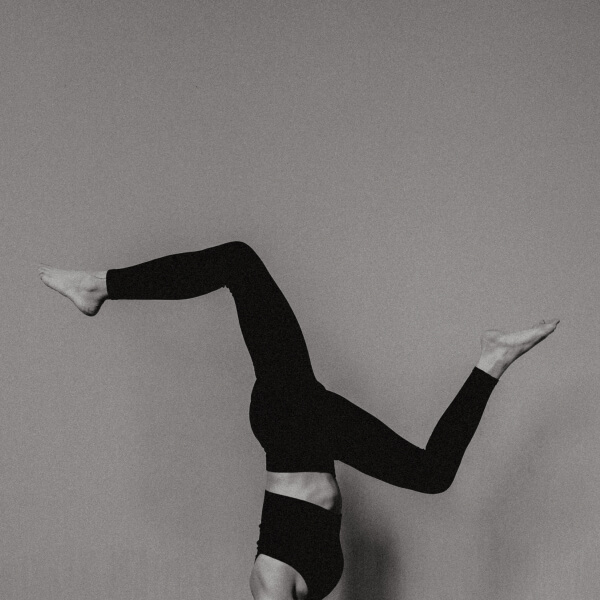
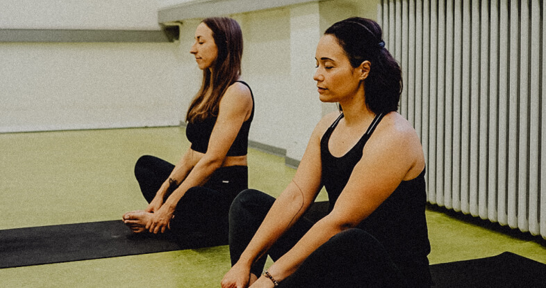
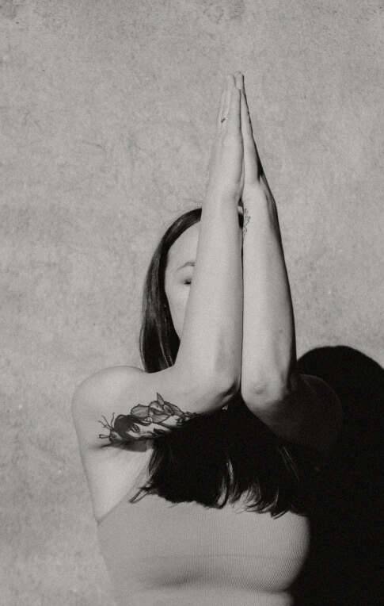

im flow
vinyasa

Heute schon gespürt?
Im Vinyasa Yoga sind die Asanas (=Yoga-Haltungen) fließend miteinander verbunden. Asanas dehnen und kräftigen genau die Muskeln, Sehen und Bänder, die durch unsere einseitigen Bewegungen im Alltag falsch oder zu wenig belastet sind.
Um während der fließenden Übergänge eine gesunde Körperhaltung sicherzustellen, lege ich bei meinen Flows mehr Wert auf Achtsamkeit und langes Halten als auf schnelle Bewegungsabläufe oder fancy Asanas. Denn je länger du eine Asana hälst, umso feiner kannst du sie spüren und justieren. Dabei versuchst du, deine Aufmerksamkeit durch bewusstes Atmen immer wieder in die Gegenwart zurückzuholen.

Stretching für den Körper, Cooldown für den Geist
Nach dem Power-Yoga sind Körper & Geist nun bereit für intensive Dehnungen. Bei der nachfolgenden Yin Yoga Sequenz fokussieren wir uns auf das Gewebe im Körper, um es gesund und flexibel zu erhalten. Die sorgsam ausgewählten Asanas werden lange gehalten, um unserem Gewebe Zeit zu geben, sich zu öffnen. Denn durch das Dehnen nach körperlicher Anstrengung im Vinyasa können sich die Muskeln entspannen und schneller regenerieren. So werden deine Beweglichkeit und Flexibilität gefördert und der Muskelkater deutlich gemindert. Gleichzeitig bekommt unser Geist dabei endliche eine Pause, um sich zu sortieren – quasi eine aktive Meditation. Denn diese Ruhe fehlt uns häufig in unserem stressigen Alltag.

Vollkommene Entspannung
Beendet wird die Stunde mit der Endentspannung, Shavasana. Die oft unterschätzte Königsdisziplin. Während es uns in den Asanas eher leicht fällt, die Gedanken und Stressituationen des Alltags beiseite zu legen, sind wir in der Ruhephase unserem Geist ausgeliefert. Wenn wir nicht abschweifen, sondern im Hier und Jetzt bleiben, können wir unser Nervensystem beruhigen, Stresshormone abbauen und Glückshormone freisetzen.


Für die Spontanen
Drop-In
14 €
Um im Flow zu bleiben
10er Karte
12 €
Weil du es verdienst
Ermäßigt
10 €
So viele gute Gründe
- Weil du hier gleichzeitig deinen Körper stärkst, Flexibilität ausbaust & zur Ruhe kommst.
- Weil du lernst, achtsam gegenüber dir selbst zu sein.
- Weil du schon jetzt etwas für deine Gesundheit von morgen machen kannst.
- Weil du einen Ausgleich zu deinem Alltag an Handy und Schreibtisch schaffst.
- Weil du Stress abbauen kannst und lernst, im Alltag besser damit umzugehen.
Klingt gut?
buchen
Die häufigsten Fragen zum Vinyasa Kurs
Kurz und knapp – was ist Vinyasa Yoga?
Beim Vinyasa Yoga werden die klassischen Hatha Yoga Asanas nicht einzeln praktiziert, sondern so in eine Reihenfolge gebracht, dass sie fließend ineinander übergehen.
Woher weiß ich, ob Vinyasa der richtige Yogastil für mich ist?
Grundsätzlich ist der Vinyasa Stil eher ein dynamischer, kraftvoller Yogastil. In meinen Kursen geht es vergleichsweise jedoch langsamer zu als bei den meisten Vinyasa Kursen. Mein Fokus liegt hier auf der Haltung der Asanas in Kombination mit einem kreativen Flow. Aber auch hier heißt es – probieren geht über studieren – da es beim Yoga ganz viel um das eigene Gefühl geht, kannst nur du selbst entscheiden, welcher Yogastil zu dir passt. Und hat man einmal den richtigen Stil gefunden, bedarf es auch noch eine passende Lehrperson, mit der man sich verbunden fühlt. Daher rate ich dir unbedingt – probier einfach verschiedene Yogastile aus. Du wirst merken, wenn es sich gut anfühlt.
Du kannst auch bei dem Yogastil-Test von YogaEasy reinschauen.
Brauche ich Vorerfahrung für den Kurs?
Nein. Die Kurse sind gleichermaßen für Anfänger:innen wie für fortgeschrittene Yogi:nis geeignet.
Wo finden die Yogastunden statt?
Die Yogastunden finden in der Villa Rü im Raum 202 statt, direkt gegenüber vom Girardethaus. Da wir uns mitten in Rüttenscheid befinden, Plane genug Zeit zum parken ein, falls du mit dem Auto kommst.
Adresse
Girardetstraße 21,
45131 Essen
Raum 202
Direkt zu Google Maps
Allgemeine Infos zu meinen Kursen bekommst du hier.